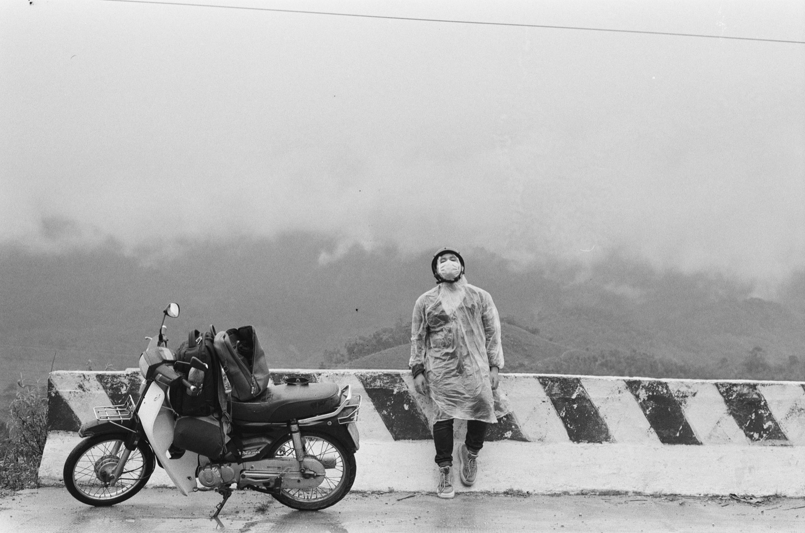

Расход топлива байка 50сс: как посчитать без догадок
Универсальной цифры для всех байков 50сс нет. Реальный расход зависит от конструкции двигателя, состояния техники, веса, пробок, подъёмов и манеры езды. Поэтому полезнее один раз измерить расход своего байка, чем ориентироваться на чужой рекламный показатель.
Как измерить расход правильно
- Заправь бак до одинакового понятного уровня.
- Обнули суточный пробег или запиши километраж.
- Проедь не короткий круг, а обычные городские поездки.
- Снова заправься до того же уровня и запиши литры.
- Раздели литры на километры и умножь на 100.
Например: если на 120 км вошло 2,4 литра, расчёт будет 2,4 ÷ 120 × 100 = 2 литра на 100 км. Для точности повтори замер несколько раз.

Что повышает расход
- резкие старты и постоянный полный газ;
- низкое давление в шинах;
- грязный воздушный фильтр;
- изношенная трансмиссия или плохо настроенный карбюратор;
- езда вдвоём, тяжёлый багаж и подъёмы;
- частые короткие поездки с остановками.
Почему указатель топлива врёт
Шкала на старом байке не всегда линейна: первая половина может уходить медленно, а остаток — быстро. Не рассчитывай дальность только по стрелке. Запомни обычный пробег между заправками и оставляй резерв.
Когда высокий расход — повод для сервиса
Если привычный расход внезапно вырос, появился запах бензина, подтёки, чёрный дым или байк стал хуже заводиться, не откладывай диагностику. Утечка топлива — вопрос не экономии, а безопасности.
Как тратить меньше
Поддерживай давление в шинах, разгоняйся плавно, вовремя меняй масло и фильтр, не вози ненужный груз. Советы по обслуживанию собраны в статье об уходе за байком, а порядок заправки — в материале про бензин во Вьетнаме.
Итог
Лучший ориентир — не обещание продавца, а несколько собственных замеров в одинаковых условиях. Так ты заметишь изменение расхода раньше, чем небольшая неисправность станет дорогим ремонтом.